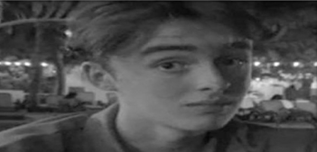

denon

ik ben Denon, 23 jaar, woonzoekende in Vught.
mijn passies zijn: ontbijtgranen kopen, grote autobanden tekenen,doelgericht werken. En soms
vind ik fietsen door een park heel vet. doordat ik laatst problemen had met mijn linker rem op mijn
fiets heb ik dus een lifehackvideo gevolgd die het niet zo goed deed. Ik vond het van de malle
dat niemand dit ooit heeft geconfirmed of deze video's wel werken. Ik maak mij groot voor een internet
waarbij het zeker is dat deze lifehacks daadwerkelijk niet werken!
bram
Guten tag, mijn 15 Bram. 1k ben 23 jaar en woon
in
amsterdam. Naast mijn studie
Podiumtechniek aan de ATD volg ik een opleiding Communicatie en Multinedia Design aan de HVA.
ontzettend gaaf!
Naast mijn fan-tas-tische studie hou ik vooral veel van insecten.
Hoe meer poten het dier heett. hoe geweldiger ik het vind, meen insecten zonder poten zijn ook
een hekel aan heb:
doen.
Er zijn echter ook dingen waar ik
Litehacks die niet werken. in deze Podcast breken we eindelijk de koppies van het publiek
door jullie daadwerkelijk te laten zien
dat deze lifehacks het. ECHT NIET doen
te ondervinden. teleurstellins.
Zodat Jullie het zelf niet hoeven ondervinden
Dat bespaart jullie een teleurstelling.
job

Hol 1k ben Job en ik ben 18 jaar oud. ik studeer Cormunicatie ar Multimedia Design en dit doe ik op de HVA in Amsterdam.
Naast mun stude ben ik veel of net internet te vinden en ben dol op het. analsseren van alles wat online viral gaat. Ut het nu gaat om de nieuuste internettrend ot een bizarre lit ehack, ik ben altiud desene cie met een sceptische bllk denkt: Waaron doet. iedereen dit?'
Met mijn achtergrond in design aet ascineera de brehde trends
Zich verspreiden en hoe
serleus, - sarcasme en zeltspot. sun miun superkrachten, vooral als dingen anders lopen dan gepland.